学期ごとに様々な行事があります。幼稚園のお友達みんなで取り組むものもあれば、その学年だけのお楽しみもあります。行事を通して、クラスがひとつにまとまっていったり、自信がついたり、喜びを分かち合えたり、自分の苦手なことに向き合ったりと、子ども達は様々な経験をして成長します。
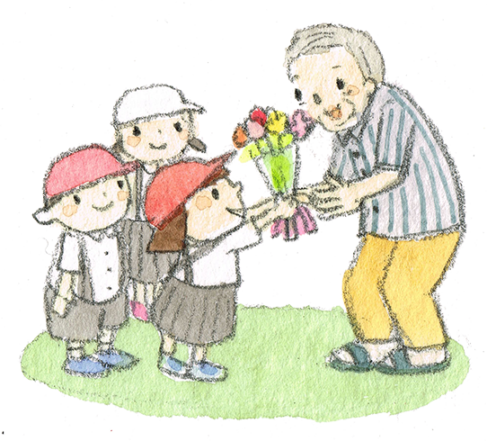
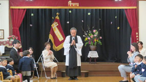
ワクワクドキドキの入園式
これからいっぱい遊ぼうね
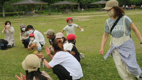
大好きなお家の人と一緒に
楽しい遠足の一日
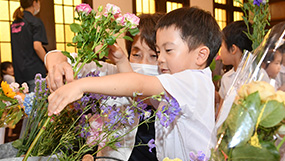
「神さま、きれいなお花を
たくさんありがとうございます」
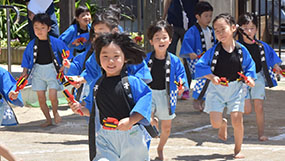
憧れの年長ヨサコイソーラン節。
「法被姿で気合いが入るね」
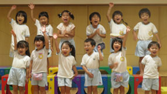
みんなの思いをお歌に込めて…
お客さんに届きますように
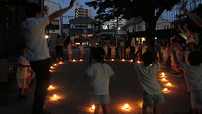
日が暮れて、キャンドルを灯すと
心も温かくなる特別な夜☆
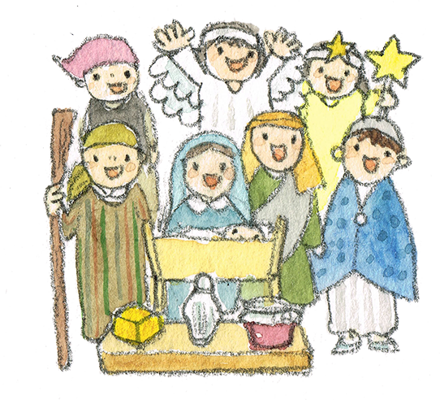
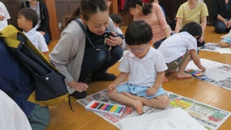
幼稚園では、こんなに楽しいこと
しているんだよ～♪
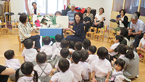
おじいちゃん･おばあちゃんと
お部屋で一緒に遊ぶの楽しい！
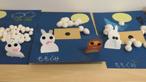
ゆったりお月見制作
縦割り保育だから安心できるね
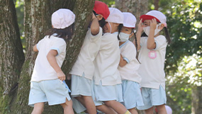
初めて年少さんだけで
お出かけ！楽しい～♪
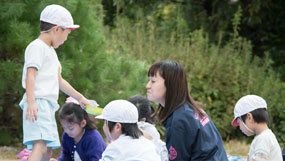
気持ちの良いお外で体を
たくさん動かせるのは最高！
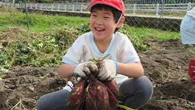
土の中からこんな立派なお芋が！
何にして食べようかな～♪
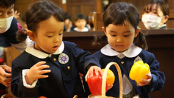
秋の実りが礼拝堂にたくさん
神さまに感謝してお捧げ
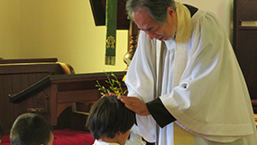
「こんなに大きくなりました！」
司祭様に祝福していただきます
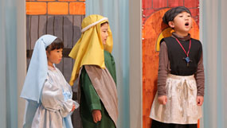
聖三一のお友達･先生達みんなで
心を合わせてイエス様をお祝い
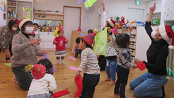
サンタさんも来るかな？
楽しいクリスマスのひととき☆
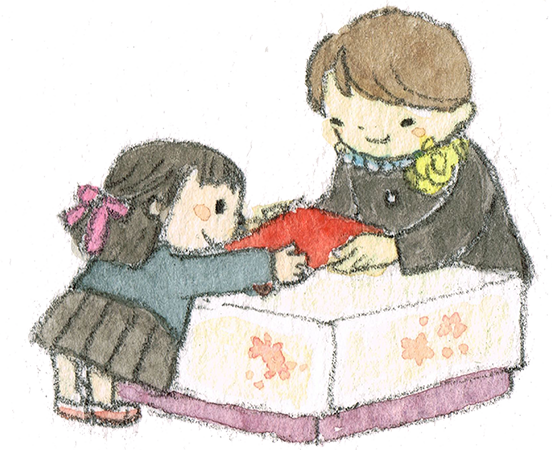
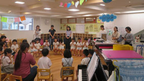
２学期と違って、できることが
こんなにたくさんになったよ
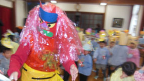
鬼は外！福は内！心の中の
鬼も追い出さなきゃ～！
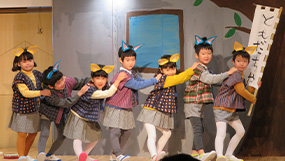
クラスがひとつになって
今までの取り組みをお見せします
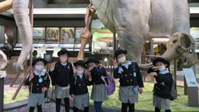
みんなで一緒に過ごすのも
あともう少し…思い出作ろうね！
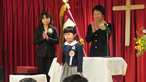
胸をはって卒園証書をもらう姿は
みんなキラキラ輝きます
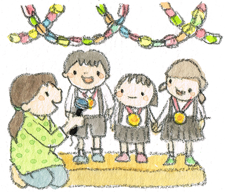
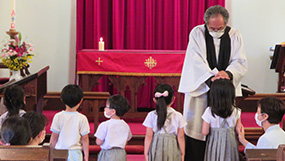
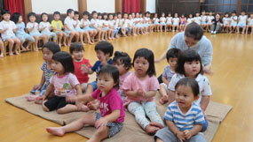
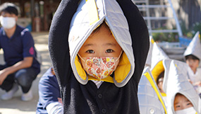
午前中の設定保育は、夏はプール遊びと泥んこ遊び。その他の季節は、リズム遊びや制作。午後は、幼児さんも全員お昼寝タイムがあります。設定保育は、担当の先生のお得意のジャンルの中から日替わりで企画されます。
企画の例としてゲーム大会・手作り大型絵本・スライム作り・手品大会・歌合戦・季節の制作・ミニ運動会などがあります。
年中さんになると各課外活動を週一回のペースで受けることができます。
課外活動は全て当園舎で開催されるため、習い事への送り迎えが必要ありません。
各分野の専門の先生が子ども達に教えてくれます。
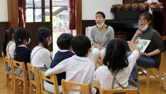
英語を学び、そして「伝わることのたのしさ」を知る。こどもたちが羽ばたく世界の人たちと、幼いときから自然に寄り添えるように、英語教室を開催しています。
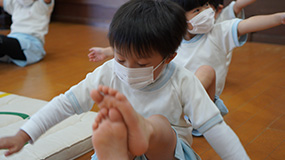
マット運動や鉄棒等を通して体の使い方を幼いうちから学ぶことができます。
子どもたちの、心とからだの調和をはかり、豊かな人生を歩む基礎づくりを目的としています。
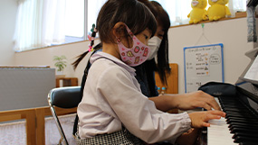
時には歌ったり、リトミックをしながら、ピアノを通して音楽について学ぶ個人レッスンです。
表現することで個性を育み、より豊かな人格の形成を目指しています。